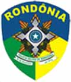

Começou no dia 01 o período de inscrições para o concurso da Polícia Militar de Rondônia, com um total de 500 vagas para a patente de Soldado. O candidato poderá se inscrever até o dia 04 de janeiro de 2009, no site da organizadora do concurso, a FUNCAB.
Das quinhentas vagas, 455 são para homens e 45 para mulheres. O candidato a PM deverá ter no mínimo nível médio de escolaridade (2º grau), e idade mínima de 18 anos e máxima de 28 anos.

O salário bruto do futuro policial militar, previsto a partir de abril do ano que vem, é de R$1.513,04. É dividido em Soldo (R$1.011,41), Adicional de posto/graduação (R$240,21), Auxílio fardamento (R$69,93), Etapa de alimentação (R$141,49), e Auxílio Saúde (R$50,00).
Requisitos para ser aceito depois de aprovado no concurso para a PMRO:
1. Ter sido aprovado e classificado no Concurso Público, incluindo-se suas etapas. 2. Ter nacionalidade brasileira. 3. Estar em dia com as obrigações eleitorais. 4. Ter Certificado de Reservista ou de dispensa de incorporação, em caso do candidato do sexo masculino. 5. Possuir o nível de escolaridade exigido para o exercício do cargo. 6. Não estar cumprindo sanção por inidoneidade, aplicada por qualquer órgão público e/ou entidade da esfera federal, estadual e/ou municipal. 7. Ter descalço e descoberto a altura mínima de 1,65m para os candidatos do sexo Masculino e de 1,60m para as candidatas do sexo Feminino. 8. Ter boa conduta social, não possuir antecedentes criminais, achando-se no pleno exercício de seus direitos civis e políticos. 9. Ter aptidões clínica, física e mental para o exercício das atribuições do cargo.

O concurso é dividido em fases:
I - Prova Objetiva, de caráter eliminatório e classificatório; II – Redação, de caráter eliminatório e classificatório; III - Teste de Capacidade Física, de caráter unicamente eliminatório; IV - Avaliação Psicológica, de caráter unicamente eliminatório; V - Exame Médico, de caráter unicamente eliminatório.
A taxa de inscrição é de R$75,00, e para participar do concurso, é só preencher cadastro no site oficial do concurso, www.funcab.org, e gerar o boleto bancário para pagamento. No mesmo site, está aberta a inscrição para ser bombeiro.
O Edital pode ser baixado através deste link, O Manual do Candidato neste link, e a ficha para solicitar isenção da taxa de inscrição neste link.
É sempre salutar lembrar que estudar através das provas do concurso anterior é muito bom, para direcionar os esforços. Boa sorte!